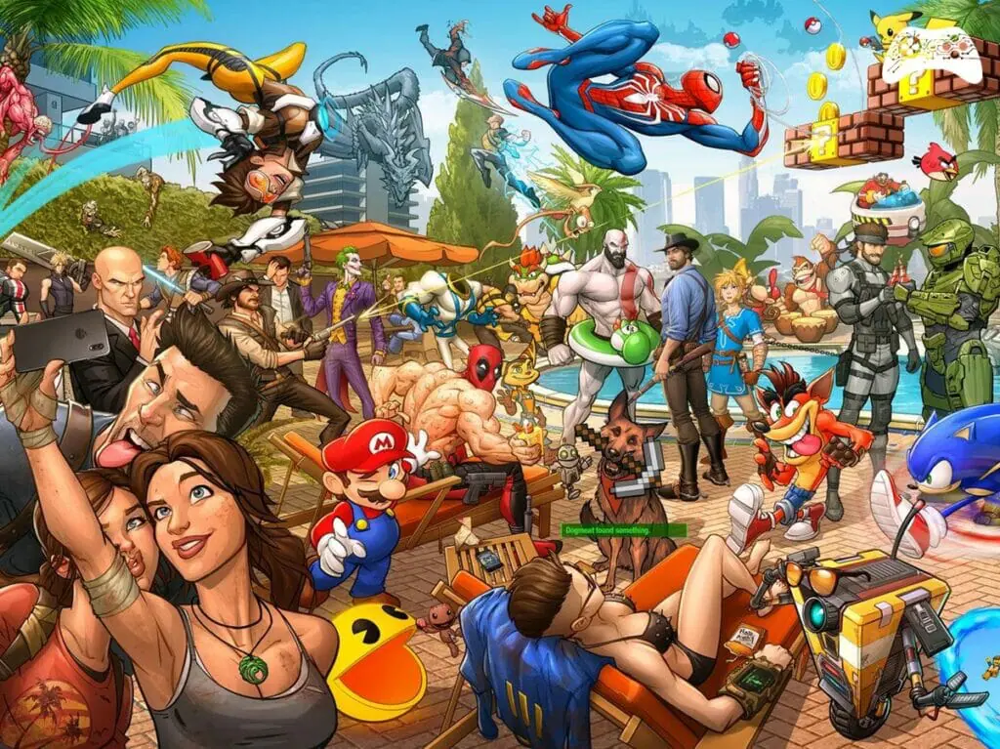
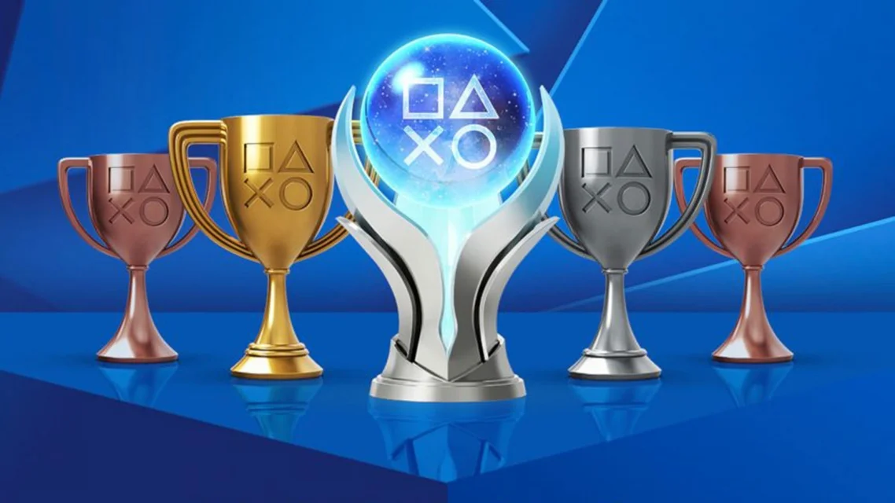
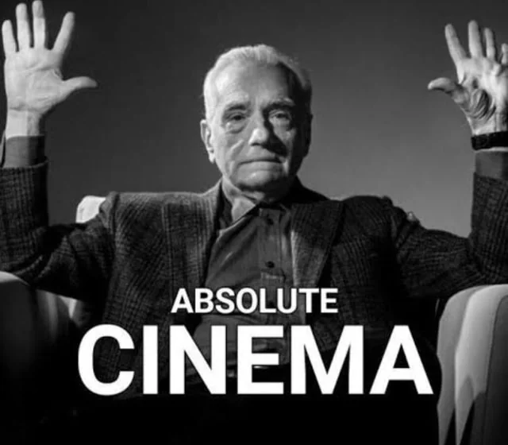

Sou um amante da leitura! Tenho mais de 200 Livros na minha Estante. Gosto principalmente do gênero de fantasia. A leitura me permite viajar para outros mundos e viver experiências intensas através das palavras. Aqui estão alguns dos meus livros favoritos:
As Crônicas de Narnia (Saga completa) - C.S Lewis
Minha Querida Assombração - Reginaldo Prandi
Scammonis: E o Elixir de Copérnio - Marcela Franca
Harry Potter (Saga Completa) - J.K. Rowling
As Crônicas de Spiderwick - Holly Black
It a Coisa - Stephen King
Dragões de Éter - Raphael Draccon
O Hobbit - J.R.R Tolkien
Diário de Um Banana - Jeff Kiney
Jogos de Vídeo Game
Eu adoro jogar vídeo game! Desde jogos clássicos até os mais modernos, sempre encontro algo que me desafie e me divirta. Aqui estão alguns dos meus jogos favoritos:

Ark Survival Evolved
God of War
The Last of Us
Minecraft
Cuphead
Black Myth Wukong
Lies of P
The Witcher 3
Cyberpunk 2077
Left 4 Dead
Rocket League
E muitos outros!
Platinar Jogos
Alem da minha paixão por Video Games, um novo Hobbie que eu descobri que eu amo e que está totalmente ligado aos Video games, são as Platinas, que consistem na maioria das vezes em fazer 100% dos jogos, a baixo estão alguns jogos que eu já platinei:

God of War 2018
God of War Ragnarok
The Last of Us: Part 2
Elden Ring no PS4 e no PC
Detroit Become Human
Ark Survival Evolved
Cuphead
Another's Crabs Treasures
Little Kitty Big City
Cyberpunk 2077
Hogwarts Legacy
Black Myth Wukong
Coleção de Moedas
Minha coleção de moedas é uma das minhas maiores paixões. Coleciono moedas de vários países e sempre busco adicionar novas peças à minha coleção. Cada moeda tem uma história única, e gosto de aprender sobre a cultura de cada país ao longo dos anos.
Filmes, Séries e Animes
Desde criança sou apaixonado pelo cinema e tudo que envolve ele, assistir é uma das minhas maiores paixões, seja Filmes ou Série e até Animes, a baixo estão alguns dos meus favoritos:

As Crônicas de Narnia: o Leão a Feiticeira e o Guarda Roupa